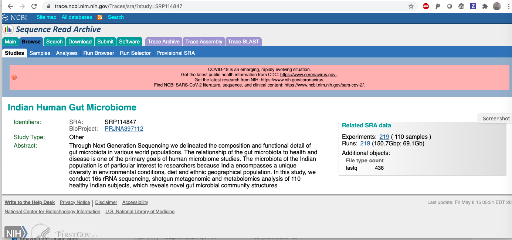

This vignette reviews basic aspects of interacting with omicidx to obtain metadata about metagenomics studies available in NCBI SRA.
To get things rolling, let’s assume we know the identifier for an SRA study of interest: SRP114847. How we discover identifiers for studies or families of studies will be discussed later.
We can obtain a rectangular table of information about SRP114847 by querying a specific endpoint of the omicidx API. We’ll use the “runs for study” endpoint and then discuss why and how afterwards.
library(tibble) metadata=as_tibble(jsonlite::fromJSON(txt= url('https://api.omicidx.cancerdatasci.org/sra/studies/SRP114847/runs?size=500'), flatten=TRUE)$hits) dim(metadata) #> [1] 219 70
So there are 219 rows returned. We can visit the study level page at SRA to find:

The mention of 219 runs suggests that the API did its job correctly.
On the basis of this query, the metadata table could have no more than 500 rows. What are the fields returned by our query?
colnames(metadata) #> [1] "cluster_name" "static_data_available" #> [3] "total_spots" "avg_length" #> [5] "sample_accession" "experiment_accession" #> [7] "received" "accession" #> [9] "published" "study_accession" #> [11] "size" "insdc" #> [13] "load_done" "is_public" #> [15] "alias" "qualities" #> [17] "attributes" "total_bases" #> [19] "lastupdate" "status" #> [21] "study.pubmed_ids" "study.identifiers" #> [23] "study.received" "study.abstract" #> [25] "study.accession" "study.published" #> [27] "study.title" "study.center_name" #> [29] "study.study_type" "study.insdc" #> [31] "study.alias" "study.attributes" #> [33] "study.lastupdate" "study.BioProject" #> [35] "study.status" "sample.organism" #> [37] "sample.identifiers" "sample.xrefs" #> [39] "sample.description" "sample.taxon_id" #> [41] "sample.received" "sample.accession" #> [43] "sample.published" "sample.BioSample" #> [45] "sample.insdc" "sample.alias" #> [47] "sample.attributes" "sample.lastupdate" #> [49] "sample.status" "experiment.library_layout" #> [51] "experiment.identifiers" "experiment.sample_accession" #> [53] "experiment.xrefs" "experiment.received" #> [55] "experiment.accession" "experiment.published" #> [57] "experiment.title" "experiment.library_strategy" #> [59] "experiment.platform" "experiment.study_accession" #> [61] "experiment.insdc" "experiment.instrument_model" #> [63] "experiment.design" "experiment.alias" #> [65] "experiment.library_name" "experiment.attributes" #> [67] "experiment.library_selection" "experiment.lastupdate" #> [69] "experiment.library_source" "experiment.status"
There is some structure in the field names. There are four families of fields, base-level, study-level, experiment-level, and sample-level. The study/experiment/sample hierarchy reflects the fundamental data model of NCBI SRA.
It is somewhat curious that the field names do not include the token run. It seems reasonable to say that ‘run’ is a synonym for ‘experiment’, but the relationship is not always one-to-one. In this case, we see that each row returned has a unique experiment accession number:
A challenging aspect of SRA metadata is the diversity of sample attributes recorded, which varies from study to study. The metadata sample.attributes field is nested within the metadata table, and consists of a list of tag-value pairs. As examples:
metadata$sample.attributes[1:2] #> [[1]] #> tag value #> 1 collection_date 20-Jul-2016 #> 2 env_biome Human-gut #> 3 env_feature Human associated habitat #> 4 env_material Faeces #> 5 geo_loc_name India: Bhopal #> 6 host Homo sapiens #> 7 lat_lon 23.26 N 77.41 E #> 8 Number Sample12 #> 9 host_age 29 #> 10 host_diet Veg #> 11 BioSampleModel Metagenome or environmental #> #> [[2]] #> tag value #> 1 collection_date 20-Jul-2016 #> 2 env_biome Human-gut #> 3 env_feature Human associated habitat #> 4 env_material Faeces #> 5 geo_loc_name India: Bhopal #> 6 host Homo sapiens #> 7 lat_lon 23.26 N 77.41 E #> 8 Number Sample11 #> 9 host_age 22 #> 10 host_diet Veg #> 11 BioSampleModel Metagenome or environmental
This is somewhat cumbersome but it allows for diversity in metadata capture from sample to sample.
To transform the sample.attributes to a table with one row per run, tidyr pivoting is very efficient:
sampatts = metadata %>% dplyr::select(accession, sample.attributes) %>% tidyr::unnest(sample.attributes) %>% tidyr::pivot_wider(names_from='tag', values_from='value') DT::datatable(sampatts)
lat_lon), and diet (sort on host_diet), but not on env_material (sort on it).
So, with very little code, we’ve learned a lot about SRP114847. Now let’s learn more about the API.
The OmicIDX system is developed using OpenAPI 3.0. It is possible to learn about the features of OmicIDX by parsing a JSON document.
ref = jsonlite::fromJSON("https://api.omicidx.cancerdatasci.org/openapi.json") names(ref) #> [1] "openapi" "info" "paths" "components"
The paths element is really useful for programming with the API.
names(ref$paths) #> [1] "/sra/fields/{entity}" #> [2] "/sra/studies/{accession}" #> [3] "/sra/studies" #> [4] "/sra/studies/{accession}/samples" #> [5] "/sra/studies/{accession}/experiments" #> [6] "/sra/studies/{accession}/runs" #> [7] "/sra/samples/{accession}" #> [8] "/sra/samples" #> [9] "/sra/samples/{accession}/experiments" #> [10] "/sra/samples/{accession}/runs" #> [11] "/sra/experiments/{accession}" #> [12] "/sra/experiments" #> [13] "/sra/experiments/{accession}/runs" #> [14] "/sra/runs/{accession}" #> [15] "/sra/runs" #> [16] "/biosample/fields/{entity}" #> [17] "/biosample/samples" #> [18] "/biosample/samples/{accession}" #> [19] "/facets/{entity}"
It has its own substructure, which you can explore using an expandable tree – try listviewer::jsonedit(ref). For now we’ll focus on the endpoint we used.
ourendpt = "/sra/studies/{accession}/experiments" as.data.frame(cbind(qualname=ref$paths[[ourendpt]]$get$parameters$name, ref$paths[[ourendpt]]$get$parameters$schema)) # wanted datatable but threw warning #> qualname title type #> 1 accession Accession string #> 2 include_fields Include_Fields array #> 3 exclude_fields Exclude_Fields array #> 4 size Size integer #> 5 cursor Cursor string #> description #> 1 An accession for lookup #> 2 Fields to include in results. The default is to all fields (*) #> 3 Fields to exclude from results. The default is to not exclude any fields. #> 4 <NA> #> 5 <NA> #> type default example exclusiveMaximum #> 1 <NA> NULL NULL NA #> 2 string NULL * NA #> 3 string NULL NULL NA #> 4 <NA> 10 10 1000 #> 5 <NA> NULL NULL NA
We found that refs$paths has lots of information that our software can use to figure out what it can do with the OmicIDX API. Here we’ll add a lucene query for the sra/studies endpoint. We’ll modify the default number of hits to retrieve, which is 10, specifying that we want up to 15 records. We’ll use q=microbiome%20AND%20cancer as a Lucene query.
mcq = jsonlite::fromJSON( "https://api.omicidx.cancerdatasci.org/sra/studies?q=microbiome%20AND%20cancer&size=15", flatten=TRUE) as_tibble(mcq$hits) #> # A tibble: 15 x 23 #> pubmed_ids total_spots identifiers experiment_count received abstract #> <list> <chr> <list> <chr> <chr> <chr> #> 1 <list [0]> 2669228 <df[,2] [2… 18 2020-04… Argan p… #> 2 <list [0]> 26923 <df[,2] [3… 2 2013-07… Objecti… #> 3 <list [0]> 2743023 <df[,2] [2… 41 2014-11… This st… #> 4 <list [0]> 117647491 <df[,2] [2… 96 2014-11… Individ… #> 5 <list [0]> 6920681858 <df[,2] [2… 1515 2014-11… Several… #> 6 <list [0]> 495190 <df[,2] [2… 39 2015-05… Backgro… #> 7 <list [0]> 4262914461 <df[,2] [2… 312 2015-03… Colorec… #> 8 <list [0]> 27646 <df[,2] [2… 1 2015-02… Heat-st… #> 9 <list [0]> 108904 <df[,2] [2… 10 2015-10… The int… #> 10 <list [0]> 30566007 <df[,2] [2… 10 2015-09… The lun… #> 11 <list [0]> 3604330583 <df[,2] [3… 128 2015-10… We perf… #> 12 <list [0]> 8653463 <df[,2] [2… 30 2016-06… Morphin… #> 13 <list [0]> 6796169358 <df[,2] [3… 257 2016-06… Obesity… #> 14 <list [0]> 3868574676 <df[,2] [3… 882 2016-02… Accumul… #> 15 <list [0]> 260800 <df[,2] [3… 55 2016-11… Cancero… #> # … with 17 more variables: accession <chr>, published <chr>, title <chr>, #> # mean_bases_per_run <dbl>, run_count <chr>, center_name <chr>, #> # study_type <chr>, insdc <lgl>, sample_count <chr>, alias <chr>, #> # attributes <list>, total_bases <chr>, lastupdate <chr>, BioProject <chr>, #> # status <chr>, description <chr>, broker_name <chr>
sra/studies endpointLet’s use the refs entity computed above to see what we can request using the sra/studies endpoint.
ourendpt = "/sra/studies" as.data.frame(cbind(qualname=ref$paths[[ourendpt]]$get$parameters$name, ref$paths[[ourendpt]]$get$parameters$schema)) # wanted datatable but threw warning #> qualname title type #> 1 q Q string #> 2 size Size integer #> 3 cursor Cursor string #> 4 facet_size Facet_Size integer #> 5 include_fields Include_Fields array #> 6 exclude_fields Exclude_Fields array #> 7 facets Facets array #> description #> 1 The query, using [lucene query syntax](https://lucene.apache.org/core/3_6_0/queryparsersyntax.html) #> 2 <NA> #> 3 The cursor is used to scroll through results. For a query with more results than `size`, the result will include `cursor` in the result json. Use that value here and re-issue the query. The next set or results will be returned. When no more results are available, the `cursor` will again be empty in the result json. #> 4 The maximum number of records returned for each facet. This has no effect unless one or more facets are specified. #> 5 Fields to include in results. The default is to all fields (*) #> 6 Fields to exclude from results. The default is to not exclude any fields. #> 7 A list of strings identifying fields for faceted search results. Simple term faceting is used here, meaning that fields that are short text and repeated across records will be binned and counted. #> example exclusiveMaximum default type #> 1 cancer NA NULL <NA> #> 2 10 1000 10 <NA> #> 3 NULL NA NULL <NA> #> 4 10 NA 10 <NA> #> 5 * NA NULL string #> 6 NULL NA NULL string #> 7 NULL NA NULL string
The q parameter is used to specify queries in the Lucene query format. We’ll return to that later.
Consider the content of the inst/curated folder of the curatedMetagenomicDataCuration repository. This is a collection of tsv files with sample attributes and NCBI_accession numbers for the samples. Each tsv file has a name in format [tag]_[year] where tag is often an author name.
The first folder is called AsnicarF_2017. There are two files: the AsnicarF_2017_metadata.tsv and a python program. Other folders may have only the tsv file.
Let’s get information on a specific sample in this study. We read from the tsv file in github the SRR number of the first row: SRR4052021. This is a token that can be used with the /sra/runs endpoint of OmicIDX.
pref = "https://api.omicidx.cancerdatasci.org/" do_one = "sra/runs/SRR4052021" lk1 = jsonlite::fromJSON(paste0(pref, do_one)) names(lk1) #> [1] "cluster_name" "static_data_available" "study" #> [4] "total_spots" "avg_length" "sample_accession" #> [7] "experiment_accession" "received" "accession" #> [10] "published" "sample" "study_accession" #> [13] "size" "experiment" "insdc" #> [16] "load_done" "is_public" "alias" #> [19] "qualities" "attributes" "total_bases" #> [22] "lastupdate" "status"
So there is a straightforward way to get detailed metadata for an SRR. Massaging the output here, to get that which is useful for metagenomic analysis, is an exercise.
We encapsulated code we used above to get metadata on the AsnicarF_2017 study in the function samp_atts_by_study, that we’ll show and demonstrate here. We determined the SRP number from the call above.
suppressPackageStartupMessages({ library(md4mg) }) #> Warning: package 'jsonlite' was built under R version 4.0.2 samp_atts_by_study #> function (srp = "SRP082656", size = 500, cursor = NULL, ...) #> { #> base_url = "https://api.omicidx.cancerdatasci.org/sra/studies/%s/runs?size=%s" #> if (!is.null(cursor)) #> base_url = paste0(base_url, "&cursor=", cursor) #> qstr = sprintf(base_url, srp, size) #> md = try(jsonlite::fromJSON(txt = qstr, flatten = TRUE)) #> if (size == 0) #> return(md) #> if (inherits(md, "try-error")) #> stop("could not parse JSON") #> metadata = as_tibble(md$hits) #> if (inherits(metadata, "try-error")) #> stop("check srp") #> sampatts = metadata %>% dplyr::select(accession, sample.attributes) %>% #> tidyr::unnest(sample.attributes) %>% dplyr::filter(tag != #> "BioSampleModel") %>% tidyr::pivot_wider(names_from = "tag", #> values_from = "value") #> attr(sampatts, "cursor") = md$cursor #> sampatts #> } #> <bytecode: 0x562d239522d0> #> <environment: namespace:md4mg> sa_asnicar = samp_atts_by_study() dim(sa_asnicar) #> [1] 28 11 DT::datatable(sa_asnicar)
One could say that this is the uncurated sample metadata for this study. Of some concern is the fact that there are 28 records here but only 25 records in the tsv file.